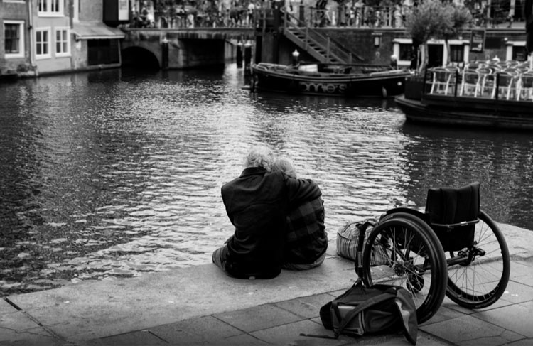
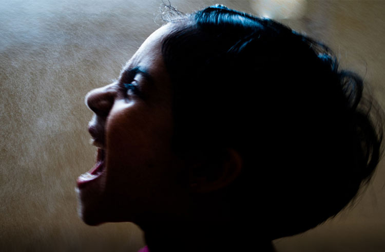

这个世界上有一群特殊的人，他们被称为“残疾人”，在身体或心理上，他们和正常人有着一道难以逾越的高墙。身体残疾者，从事某些活动的能力会受到限制，而这种活动对一般人来说是在正常能力范围内做到的。心理残疾更广泛的被称为心理障碍，是由于生理、心理或社会原因而导致的各种异常的心理过程、异常人格特征或异常行为方式，是一个人没有能力按照社会认可的适宜方式行动，以致其行为的后果对本人和社会都是不适应的。
无论是身体的残疾还是心理的障碍都会给人带来巨大的痛苦，虽然其中有部分乐观者仍能自信从容面对生活，但更多的人还是深深陷在自卑、纠结的阴影中。
有一种无助显而易见。很多对正常人来说易如反掌的事，对他们来说却是难如登天。
春天到了，花草树木万紫千红，你睁开眼便能将这一切美好收进眼底，但是他们看不到。草原壮阔无边，牛马零星散落，你可以恣意奔跑驰骋在自由的国度，但是他们做不到。你拥有挺拔的躯干、健全的四肢，公开场合你总能落落大方的侃侃而谈，但是那样的时候他们更在意的却是有没有人看到他残缺的手指……
肢体残疾以外很多人遭受着心理上的折磨，小编个人认为心理障碍的严重程度超越了大部分的身体残疾。心理疾病是伴随一生且很难逆转的，对个人、家庭甚至社会都可能带来灾难性的影响。
有一本火遍大江南北的心理障碍患者采访的著作：《天才在左，疯子在右》。书中介绍的许多人让人分不清其是天才还是疯子，很多影视剧中也有类似难以判定的角色。但是在现实生活中，更多的心理障碍者无缘天才，而只是饱受折磨。
台湾将每年的2月19日定为炬光节，在这一天举办各种活动关爱残疾人士、向身心障碍者致敬。这项活动筹备会主任表示，身体的障碍并不代表一定不如一般的人，只要心中有一盏光就仍可以如炬光般发光发热、点亮希望和爱。节日希望透过庆祝炬光节来传达身心障碍者的声音，让他们在新的一年开始，生命有尊严、生活更有自信。
1、每年的2月19日是台湾的炬光节，这一天会举办各种活动向残疾人士致敬；
2、关爱残疾人士，多一点理解和尊重。